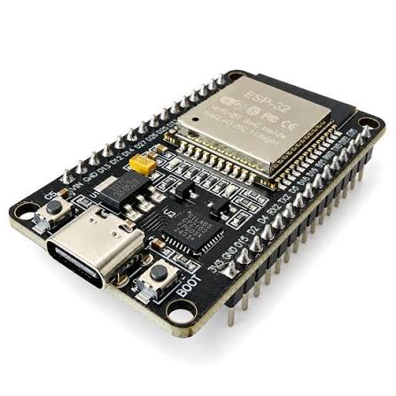
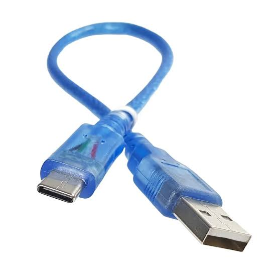
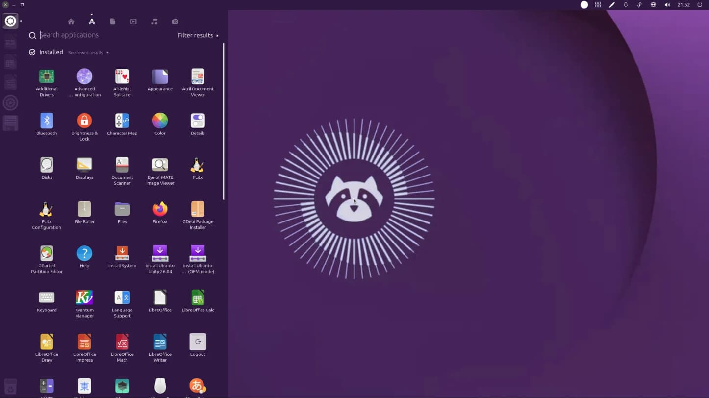
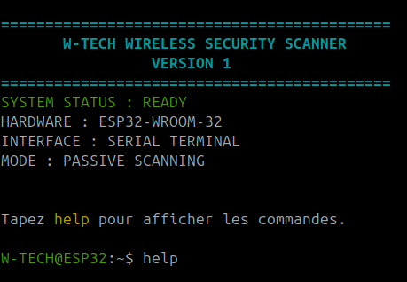

Contexte
Les réseaux sans fil et les appareils connectés font partie de notre environnement quotidien. Le projet propose un outil embarqué pour découvrir les informations diffusées par ces réseaux.
Un scanner passif Wi-Fi et Bluetooth Low Energy développé avec un ESP32-WROOM-32 et ESP-IDF.

Wireless Security Scanner est un projet d'apprentissage qui permet d'observer les réseaux Wi-Fi et les appareils Bluetooth Low Energy à proximité, à l'aide d'une carte ESP32.
Les réseaux sans fil et les appareils connectés font partie de notre environnement quotidien. Le projet propose un outil embarqué pour découvrir les informations diffusées par ces réseaux.
Mettre en pratique la programmation en C, l'utilisation d'ESP-IDF et les mécanismes de découverte passive Wi-Fi et BLE sur un microcontrôleur.
Collecter et afficher des informations techniques utiles depuis une interface série, sans tenter de se connecter aux réseaux détectés ni perturber leur fonctionnement.
Une configuration volontairement accessible, organisée autour de l'ESP32-WROOM-32.
Microcontrôleur utilisé pour les scans Wi-Fi et Bluetooth Low Energy.

Alimentation de la carte et communication avec l'ordinateur.

Machine de développement pour écrire, compiler et téléverser le programme.
Framework Espressif utilisé pour développer le logiciel embarqué en C.
Les fonctions de la première version sont accessibles depuis le moniteur série.
Détection des points d'accès et affichage du SSID, BSSID, canal, RSSI et type de sécurité.
RÉSEAUX WI-FIDécouverte passive des annonces BLE avec nom annoncé, adresse et puissance du signal.
APPAREILS BLEClassification indicative de la puissance du signal à partir de la valeur RSSI reçue.
MESURE RSSIEstimation de la densité des points d'accès détectés sur les différents canaux Wi-Fi.
CANAUX WI-FISuivi des appareils observés et synthèse des informations collectées pendant les scans.
OBSERVATIONInterface en ligne de commande pour lancer les scans et consulter les informations du système.
MONITEUR SÉRIENote technique : l'analyse des canaux estime la densité des réseaux détectés ; elle ne mesure pas directement les interférences radio physiques. La distance estimée à partir du RSSI reste indicative.
Le programme est organisé en modules afin de séparer l'interface utilisateur, la collecte des données et les fonctions de suivi.
Les principales étapes suivies pour construire et vérifier progressivement la première version.
Installation d'ESP-IDF, configuration de l'environnement Ubuntu et préparation du projet dans VS Code.
Définition de la cible ESP32 et vérification de la communication série avec la carte.
Collecte des informations diffusées par les points d'accès visibles.
Mise en place de la découverte passive des annonces Bluetooth Low Energy.
Organisation des commandes pour lancer les scans et afficher les informations.
Vérification des fonctions, correction des erreurs et ajustements du programme.
Compilation du firmware puis transfert vers la carte ESP32 pour les essais.
La version 1 ne possède pas d'écran intégré. Les commandes sont saisies depuis le moniteur série de l'environnement de développement.
helpAfficher les commandes disponibleswifi scanLancer un scan Wi-Fible scanLancer une découverte BLEstatusAfficher l'état du systèmedevicesConsulter les appareils observés
Découvrez les étapes nécessaires pour installer les outils de développement et lancer le projet sur ESP32-WROOM-32.
Visual Studio Code est utilisé comme environnement de développement pour écrire et organiser le code C.
ESP-IDF est le framework officiel d'Espressif permettant de développer et compiler des applications pour ESP32. Ce projet utilise la version 5.4.4.
Ouvrir un terminal Ubuntu et exécuter :
sudo apt update
sudo apt install git wget flex bison gperf python3 python3-pip python3-venv cmake ninja-build ccache libffi-dev libssl-dev dfu-util libusb-1.0-0Télécharger la version 5.4.4 depuis le dépôt officiel :
mkdir -p ~/esp
cd ~/esp
git clone -b v5.4.4 --recursive https://github.com/espressif/esp-idf.gitcd ~/esp/esp-idf
./install.sh esp32Cette installation prépare les compilateurs et les outils nécessaires au développement sur ESP32.
Documentation officielle ESP-IDF ↗Avant d'utiliser les commandes ESP-IDF, il faut activer son environnement dans le terminal.
source ~/esp/esp-idf/export.shUne fois cette commande exécutée, les outils ESP-IDF sont accessibles depuis le terminal.
idf.py --versionOuvrir le dossier du projet dans le terminal et sélectionner la cible ESP32-WROOM-32.
cd ~/Documents/C/Wireless-Security-Scanner/Version1idf.py set-target esp32La cible esp32 correspond à la famille ESP32 classique, utilisée par la carte ESP32-WROOM-32.
La compilation transforme les fichiers sources C en firmware compatible avec l'ESP32.
idf.py buildSi la compilation réussit, les fichiers nécessaires au téléversement sont générés dans le dossier build/.
Connecter la carte ESP32 au PC avec un câble USB Type-C, puis identifier son port série.
ls /dev/ttyUSB* /dev/ttyACM* 2>/dev/nullLe port peut être par exemple /dev/ttyUSB0 ou /dev/ttyACM0.
idf.py -p /dev/ttyUSB0 flashRemplacer /dev/ttyUSB0 par le port réellement détecté sur votre ordinateur.
Le moniteur série permet d'afficher les messages envoyés par l'ESP32 et d'interagir avec le programme.
idf.py -p /dev/ttyUSB0 monitorPour quitter le moniteur série, utiliser : Ctrl + ].
Après avoir activé ESP-IDF et ouvert le dossier du projet, les commandes principales sont :
# Compilation
idf.py build
# Téléversement
idf.py -p /dev/ttyUSB0 flash
# Moniteur série
idf.py -p /dev/ttyUSB0 monitor
# Téléversement puis ouverture du moniteur
idf.py -p /dev/ttyUSB0 flash monitorRetrouvez les fichiers sources du projet W-Tech Wireless Security Scanner, développé en C avec ESP-IDF.
Point d'entrée principal du programme
#include
#include
#include "freertos/FreeRTOS.h"
#include "freertos/task.h"
#include "esp_err.h"
#include "serial_interface.h"
#include "wifi_scanner.h"
#include "bluetooth_scanner.h"
#include "device_monitor.h"
#include "connection_monitor.h"
#include "logger.h"
#include "connection_manager.h"
#define COMMAND_BUFFER_SIZE 64
#define BLE_SCAN_DURATION_MS 11000
static void run_ble_scan(esp_err_t result)
{
if (result != ESP_OK) {
printf(COLOR_RED "Erreur BLE : %s\n" COLOR_RESET,
esp_err_to_name(result));
return;
}
printf(COLOR_YELLOW
"Observation des appareils pendant 10 secondes...\n"
COLOR_RESET);
vTaskDelay(pdMS_TO_TICKS(BLE_SCAN_DURATION_MS));
}
static void process_command(
const char *command,
esp_err_t wifi_status,
esp_err_t ble_status
)
{
if (strcmp(command, "help") == 0) {
serial_print_help();
}
/* WIFI SCAN */
else if (strcmp(command, "wifi scan") == 0) {
if (wifi_status != ESP_OK) {
serial_print_error("Scanner Wi-Fi indisponible.");
return;
}
serial_print_status("Démarrage du scan Wi-Fi...");
esp_err_t result = wifi_scanner_scan();
if (result == ESP_OK) {
serial_print_success("Scan Wi-Fi terminé.");
} else {
printf(COLOR_RED "Erreur Wi-Fi : %s\n" COLOR_RESET,
esp_err_to_name(result));
}
}
/* WIFI SIGNAL */
else if (strcmp(command, "wifi signal") == 0) {
if (wifi_status != ESP_OK) {
serial_print_error("Scanner Wi-Fi indisponible.");
return;
}
serial_print_status("Analyse des niveaux de signal Wi-Fi...");
esp_err_t result = wifi_scanner_scan();
if (result == ESP_OK) {
wifi_scanner_print_signal();
} else {
serial_print_error("Impossible d'analyser les signaux Wi-Fi.");
}
}
/* WIFI INTERFERENCE */
else if (strcmp(command, "wifi interference") == 0) {
if (wifi_status != ESP_OK) {
serial_print_error("Scanner Wi-Fi indisponible.");
return;
}
serial_print_status("Analyse de la densité des canaux Wi-Fi...");
esp_err_t result = wifi_scanner_scan();
if (result == ESP_OK) {
wifi_scanner_analyze_interference();
} else {
serial_print_error("Analyse Wi-Fi impossible.");
}
}
/* BLUETOOTH SCAN */
else if (strcmp(command, "ble scan") == 0) {
if (ble_status != ESP_OK) {
serial_print_error("Bluetooth indisponible.");
return;
}
serial_print_status("Démarrage du scan Bluetooth...");
esp_err_t result = bluetooth_scanner_start_scan();
run_ble_scan(result);
}
/* BLE SIGNAL */
else if (strcmp(command, "ble signal") == 0) {
if (ble_status != ESP_OK) {
serial_print_error("Bluetooth indisponible.");
return;
}
serial_print_status("Analyse des niveaux de signal BLE...");
esp_err_t result =
bluetooth_scanner_start_signal_scan();
run_ble_scan(result);
}
/* BLE INTERFERENCE */
else if (strcmp(command, "ble interference") == 0) {
if (ble_status != ESP_OK) {
serial_print_error("Bluetooth indisponible.");
return;
}
serial_print_status("Observation de l'activité radio BLE...");
esp_err_t result =
bluetooth_scanner_start_interference_scan();
run_ble_scan(result);
}
/* WIFI DISCONNECT */
else if (strcmp(command, "wifi disconnect") == 0) {
serial_print_status("Demande de déconnexion Wi-Fi...");
esp_err_t result = wifi_scanner_disconnect();
if (result == ESP_OK) {
serial_print_success("ESP32 déconnecté du Wi-Fi.");
} else {
printf(COLOR_RED "Déconnexion impossible : %s\n" COLOR_RESET,
esp_err_to_name(result));
}
}
/* STATUS */
else if (strcmp(command, "status") == 0) {
serial_print_status("État de surveillance :");
connection_monitor_report();
}
/* DEVICES */
else if (strcmp(command, "devices") == 0) {
device_monitor_print_summary();
}
/* CONNECTIONS */
else if (strcmp(command, "connections") == 0) {
serial_print_status("Gestion des connexions.");
connection_monitor_report();
}
/* CLEAR */
else if (strcmp(command, "clear") == 0) {
serial_clear();
serial_print_banner();
}
/* UNKNOWN COMMAND */
else if (strlen(command) > 0) {
serial_print_error("Commande inconnue.");
printf("Tapez " COLOR_YELLOW "help" COLOR_RESET
" pour afficher les commandes.\n");
}
}
void app_main(void)
{
char command[COMMAND_BUFFER_SIZE];
serial_interface_init();
serial_clear();
/* Initialisation Wi-Fi une seule fois */
esp_err_t wifi_status = wifi_scanner_init();
if (wifi_status == ESP_OK) {
serial_print_success("Scanner Wi-Fi initialisé.");
} else {
serial_print_error("Initialisation Wi-Fi échouée.");
}
/* Initialisation Bluetooth une seule fois */
esp_err_t ble_status = bluetooth_scanner_init();
if (ble_status == ESP_OK) {
serial_print_success("Scanner Bluetooth initialisé.");
} else {
serial_print_error("Initialisation Bluetooth échouée.");
}
serial_print_banner();
printf("\nTapez " COLOR_YELLOW "help" COLOR_RESET
" pour afficher les commandes.\n");
/* TERMINAL PRINCIPAL */
while (1) {
printf("\n" COLOR_GREEN
"W-TECH@ESP32"
COLOR_RESET ":~$ ");
fflush(stdout);
serial_read_command(command, sizeof(command));
if (strlen(command) > 0) {
process_command(
command,
wifi_status,
ble_status
);
}
}
} Scan des points d'accès Wi-Fi
#include "wifi_scanner.h"
#include
#include
#include
#include "esp_wifi.h"
#include "esp_event.h"
#include "esp_netif.h"
#include "nvs_flash.h"
#include "esp_mac.h"
#include "distance_estimator.h"
#include "serial_interface.h"
#include "device_monitor.h"
#include "signal_monitor.h"
#include "logger.h"
#define WIFI_MAX_NETWORKS 30
static wifi_network_t networks[WIFI_MAX_NETWORKS];
static int network_count = 0;
static const char *wifi_auth_name(wifi_auth_mode_t auth)
{
switch (auth) {
case WIFI_AUTH_OPEN: return "Ouvert";
case WIFI_AUTH_WEP: return "WEP";
case WIFI_AUTH_WPA_PSK: return "WPA";
case WIFI_AUTH_WPA2_PSK: return "WPA2";
case WIFI_AUTH_WPA_WPA2_PSK: return "WPA/WPA2";
case WIFI_AUTH_WPA2_ENTERPRISE: return "WPA2-ENT";
case WIFI_AUTH_WPA3_PSK: return "WPA3";
case WIFI_AUTH_WPA2_WPA3_PSK: return "WPA2/3";
default: return "Inconnue";
}
}
esp_err_t wifi_scanner_init(void)
{
esp_err_t err = nvs_flash_init();
if (err == ESP_ERR_NVS_NO_FREE_PAGES || err == ESP_ERR_NVS_NEW_VERSION_FOUND) {
ESP_ERROR_CHECK(nvs_flash_erase());
err = nvs_flash_init();
}
if (err != ESP_OK) return err;
ESP_ERROR_CHECK(esp_netif_init());
ESP_ERROR_CHECK(esp_event_loop_create_default());
esp_netif_create_default_wifi_sta();
wifi_init_config_t cfg = WIFI_INIT_CONFIG_DEFAULT();
err = esp_wifi_init(&cfg);
if (err != ESP_OK) return err;
err = esp_wifi_set_mode(WIFI_MODE_STA);
if (err != ESP_OK) return err;
err = esp_wifi_start();
if (err != ESP_OK) return err;
LOG_INFO("Scanner Wi-Fi initialisé.");
return ESP_OK;
}
esp_err_t wifi_scanner_scan(void)
{
wifi_scan_config_t scan_config = {
.ssid = NULL,
.bssid = NULL,
.channel = 0,
.show_hidden = true,
.scan_type = WIFI_SCAN_TYPE_PASSIVE
};
serial_print_status("Début du scan Wi-Fi...");
esp_err_t err = esp_wifi_scan_start(&scan_config, true);
if (err != ESP_OK) {
LOG_ERROR("Échec du scan Wi-Fi : %s", esp_err_to_name(err));
return err;
}
uint16_t count = 0;
err = esp_wifi_scan_get_ap_num(&count);
if (err != ESP_OK) {
return err;
}
if (count == 0) {
network_count = 0;
serial_print_status("Aucun réseau Wi-Fi détecté.");
return ESP_OK;
}
uint16_t limit = count > WIFI_MAX_NETWORKS
? WIFI_MAX_NETWORKS
: count;
wifi_ap_record_t *records = calloc(limit, sizeof(wifi_ap_record_t));
if (records == NULL) {
return ESP_ERR_NO_MEM;
}
uint16_t found = limit;
err = esp_wifi_scan_get_ap_records(&found, records);
if (err == ESP_OK) {
network_count = found;
serial_print_wifi_header();
for (uint16_t i = 0; i < found; i++) {
char bssid[18];
snprintf(
bssid,
sizeof(bssid),
MACSTR,
MAC2STR(records[i].bssid)
);
const char *ssid = (const char *)records[i].ssid;
snprintf(
networks[i].ssid,
sizeof(networks[i].ssid),
"%s",
ssid[0] ? ssid : ""
);
snprintf(
networks[i].bssid,
sizeof(networks[i].bssid),
"%s",
bssid
);
networks[i].id = i;
networks[i].channel = records[i].primary;
networks[i].rssi = records[i].rssi;
snprintf(
networks[i].security,
sizeof(networks[i].security),
"%s",
wifi_auth_name(records[i].authmode)
);
networks[i].distance =
distance_estimate_m(records[i].rssi);
serial_print_wifi_network(
networks[i].ssid,
networks[i].bssid,
networks[i].channel,
networks[i].rssi,
networks[i].security,
networks[i].distance
);
signal_monitor_report(
"Wi-Fi",
networks[i].ssid,
networks[i].rssi
);
device_monitor_add_wifi();
}
}
free(records);
return err;
}
/* Nombre de réseaux détectés */
int wifi_scanner_get_count(void)
{
return network_count;
}
/* Récupérer un réseau par son identifiant */
const wifi_network_t *wifi_scanner_get_network(int id)
{
if (id < 0 || id >= network_count)
{
return NULL;
}
return &networks[id];
}
/* Afficher tous les réseaux enregistrés */
void wifi_scanner_print_networks(void)
{
if (network_count == 0)
{
serial_print_status("Aucun réseau enregistré.");
return;
}
serial_print_wifi_header();
for (int i = 0; i < network_count; i++)
{
wifi_network_t *network = &networks[i];
serial_print_wifi_network(
network->ssid,
network->bssid,
network->channel,
network->rssi,
network->security,
network->distance
);
}
}
/* Afficher les détails d'un réseau */
void wifi_scanner_print_details(int id)
{
const wifi_network_t *network = wifi_scanner_get_network(id);
if (network == NULL)
{
serial_print_error("Identifiant Wi-Fi invalide.");
return;
}
printf("\n========== DETAILS WI-FI ==========\n");
printf("ID : %d\n", network->id);
printf("SSID : %s\n", network->ssid);
printf("BSSID : %s\n", network->bssid);
printf("Canal : %d\n", network->channel);
printf("RSSI : %d dBm\n", network->rssi);
printf("Sécurité : %s\n", network->security);
printf("Distance : %.2f m\n", network->distance);
printf("===================================\n\n");
}
/* Déconnecter l'ESP32 de son réseau Wi-Fi */
esp_err_t wifi_scanner_disconnect(void)
{
esp_err_t err = esp_wifi_disconnect();
if (err == ESP_OK)
{
serial_print_success("ESP32 déconnecté du Wi-Fi.");
}
else
{
serial_print_error("Impossible de déconnecter le Wi-Fi.");
}
return err;
}
void wifi_scanner_print_signal(void)
{
if (network_count == 0) {
serial_print_status("Aucun résultat. Lancez un scan Wi-Fi.");
return;
}
printf("\n" COLOR_CYAN COLOR_BOLD);
printf("========== WIFI SIGNAL ANALYSIS ==========\n");
printf(COLOR_RESET);
for (int i = 0; i < network_count; i++) {
const wifi_network_t *network = &networks[i];
const char *color;
if (network->rssi >= -50)
color = COLOR_GREEN;
else if (network->rssi >= -70)
color = COLOR_YELLOW;
else
color = COLOR_RED;
printf(
"[%02d] %-25.25s | Canal: %2d | %s%d dBm%s\n",
network->id,
network->ssid,
network->channel,
color,
network->rssi,
COLOR_RESET
);
}
printf("==========================================\n");
}
void wifi_scanner_analyze_interference(void)
{
if (network_count == 0) {
serial_print_status("Aucun résultat. Lancez un scan Wi-Fi.");
return;
}
int channel_count[14] = {0};
for (int i = 0; i < network_count; i++) {
int channel = networks[i].channel;
if (channel >= 1 && channel <= 13) {
channel_count[channel]++;
}
}
printf("\n" COLOR_CYAN COLOR_BOLD);
printf("======= WIFI CHANNEL ANALYSIS =======\n");
printf(COLOR_RESET);
for (int channel = 1; channel <= 13; channel++) {
if (channel_count[channel] == 0)
continue;
printf("Canal %2d : %d réseau(x) détecté(s) ",
channel, channel_count[channel]);
if (channel_count[channel] >= 4) {
printf(COLOR_RED "[DENSE]\n" COLOR_RESET);
}
else if (channel_count[channel] >= 2) {
printf(COLOR_YELLOW "[MODÉRÉ]\n" COLOR_RESET);
}
else {
printf(COLOR_GREEN "[FAIBLE]\n" COLOR_RESET);
}
}
printf("\n");
printf(COLOR_YELLOW
"Indicateur basé sur les réseaux détectés, "
"pas une mesure directe des interférences radio.\n"
COLOR_RESET);
printf("=====================================\n");
} Déclarations du module Wi-Fi
#ifndef WIFI_SCANNER_H
#define WIFI_SCANNER_H
#include "esp_err.h"
#include "esp_wifi.h"
#define WIFI_MAX_NETWORKS 30
typedef struct
{
int id;
char ssid[33];
char bssid[18];
int channel;
int rssi;
char security[16];
float distance;
} wifi_network_t;
/* Initialisation et scan */
esp_err_t wifi_scanner_init(void);
esp_err_t wifi_scanner_scan(void);
/* Affichage */
void wifi_scanner_print_networks(void);
void wifi_scanner_print_details(int id);
/* Récupération des réseaux */
int wifi_scanner_get_count(void);
const wifi_network_t *wifi_scanner_get_network(int id);
/* Déconnexion Wi-Fi de l'ESP32 */
esp_err_t wifi_scanner_disconnect(void);
void wifi_scanner_print_signal(void);
void wifi_scanner_analyze_interference(void);
#endif
Découverte des appareils Bluetooth Low Energy
#include "bluetooth_scanner.h"
#include
#include
#include
#include "esp_bt.h"
#include "esp_bt_main.h"
#include "esp_gap_ble_api.h"
#include "esp_bt_device.h"
#include "distance_estimator.h"
#include "serial_interface.h"
#include "device_monitor.h"
#include "signal_monitor.h"
#include "logger.h"
#define BLE_SCAN_SECONDS 10
typedef enum {
BLE_OUTPUT_NORMAL,
BLE_OUTPUT_SIGNAL,
BLE_OUTPUT_INTERFERENCE
} ble_output_mode_t;
static ble_output_mode_t output_mode = BLE_OUTPUT_NORMAL;
static int ble_total_devices = 0;
static int ble_strong_signals = 0;
static int ble_medium_signals = 0;
static int ble_weak_signals = 0;
/* Convertir une adresse BLE en texte */
static void format_address(
const uint8_t *bda,
char *out,
size_t size
)
{
snprintf(
out,
size,
"%02X:%02X:%02X:%02X:%02X:%02X",
bda[0], bda[1], bda[2],
bda[3], bda[4], bda[5]
);
}
/* Callback principal Bluetooth */
static void ble_gap_callback(
esp_gap_ble_cb_event_t event,
esp_ble_gap_cb_param_t *param
)
{
switch (event) {
/* Les paramètres du scan sont configurés */
case ESP_GAP_BLE_SCAN_PARAM_SET_COMPLETE_EVT:
if (param->scan_param_cmpl.status == ESP_BT_STATUS_SUCCESS) {
esp_err_t err = esp_ble_gap_start_scanning(
BLE_SCAN_SECONDS
);
if (err != ESP_OK) {
LOG_ERROR(
"Impossible de démarrer le scan BLE : %s",
esp_err_to_name(err)
);
output_mode = BLE_OUTPUT_NORMAL;
}
} else {
LOG_ERROR("Configuration du scan BLE échouée.");
output_mode = BLE_OUTPUT_NORMAL;
}
break;
/* Réception des résultats du scan */
case ESP_GAP_BLE_SCAN_RESULT_EVT:
if (param->scan_rst.search_evt == ESP_GAP_SEARCH_INQ_RES_EVT) {
int rssi = param->scan_rst.rssi;
ble_total_devices++;
if (rssi >= -60) {
ble_strong_signals++;
}
else if (rssi >= -80) {
ble_medium_signals++;
}
else {
ble_weak_signals++;
}
char address[18];
char name[ESP_BLE_ADV_DATA_LEN_MAX + 1] = {0};
format_address(
param->scan_rst.bda,
address,
sizeof(address)
);
uint8_t name_len = 0;
uint8_t *name_data = esp_ble_resolve_adv_data(
param->scan_rst.ble_adv,
ESP_BLE_AD_TYPE_NAME_CMPL,
&name_len
);
if (name_data == NULL) {
name_data = esp_ble_resolve_adv_data(
param->scan_rst.ble_adv,
ESP_BLE_AD_TYPE_NAME_SHORT,
&name_len
);
}
if (name_data != NULL && name_len > 0) {
size_t copy_len = name_len < sizeof(name) - 1
? name_len
: sizeof(name) - 1;
memcpy(name, name_data, copy_len);
} else {
snprintf(
name,
sizeof(name),
"Appareil sans nom"
);
}
/* Affichage individuel sauf en mode interférences */
if (output_mode != BLE_OUTPUT_INTERFERENCE) {
serial_print_ble_device(
name,
address,
rssi,
distance_estimate_m(rssi)
);
}
signal_monitor_report("BLE", name, rssi);
device_monitor_add_ble();
}
/* Fin du scan */
else if (param->scan_rst.search_evt == ESP_GAP_SEARCH_INQ_CMPL_EVT) {
serial_print_success("Scan BLE terminé.");
if (output_mode == BLE_OUTPUT_INTERFERENCE) {
printf("\n" COLOR_CYAN COLOR_BOLD);
printf("======= BLE RADIO OBSERVATION =======\n");
printf(COLOR_RESET);
printf(
"Appareils observés : %d\n",
ble_total_devices
);
printf(
COLOR_GREEN "Signaux forts : %d\n" COLOR_RESET,
ble_strong_signals
);
printf(
COLOR_YELLOW "Signaux moyens : %d\n" COLOR_RESET,
ble_medium_signals
);
printf(
COLOR_RED "Signaux faibles : %d\n" COLOR_RESET,
ble_weak_signals
);
printf(
COLOR_YELLOW
"\nObservation des annonces BLE uniquement. "
"Ce résultat ne mesure pas directement les interférences.\n"
COLOR_RESET
);
printf("=====================================\n");
}
output_mode = BLE_OUTPUT_NORMAL;
}
break;
default:
break;
}
}
/* Initialisation Bluetooth */
esp_err_t bluetooth_scanner_init(void)
{
esp_err_t err;
err = esp_bt_controller_mem_release(
ESP_BT_MODE_CLASSIC_BT
);
if (err != ESP_OK && err != ESP_ERR_INVALID_STATE) {
return err;
}
esp_bt_controller_config_t bt_cfg =
BT_CONTROLLER_INIT_CONFIG_DEFAULT();
err = esp_bt_controller_init(&bt_cfg);
if (err != ESP_OK) {
return err;
}
err = esp_bt_controller_enable(ESP_BT_MODE_BLE);
if (err != ESP_OK) {
return err;
}
err = esp_bluedroid_init();
if (err != ESP_OK) {
return err;
}
err = esp_bluedroid_enable();
if (err != ESP_OK) {
return err;
}
err = esp_ble_gap_register_callback(ble_gap_callback);
if (err != ESP_OK) {
return err;
}
LOG_INFO("Scanner BLE initialisé.");
return ESP_OK;
}
/* Fonction commune de démarrage */
static esp_err_t bluetooth_start_scan_with_mode(
ble_output_mode_t mode
)
{
ble_total_devices = 0;
ble_strong_signals = 0;
ble_medium_signals = 0;
ble_weak_signals = 0;
output_mode = mode;
esp_ble_scan_params_t scan_params = {
.scan_type = BLE_SCAN_TYPE_PASSIVE,
.own_addr_type = BLE_ADDR_TYPE_PUBLIC,
.scan_filter_policy = BLE_SCAN_FILTER_ALLOW_ALL,
.scan_interval = 0x50,
.scan_window = 0x30,
.scan_duplicate = BLE_SCAN_DUPLICATE_DISABLE
};
serial_print_status("Configuration du scan BLE passif...");
esp_err_t err = esp_ble_gap_set_scan_params(
&scan_params
);
if (err != ESP_OK) {
output_mode = BLE_OUTPUT_NORMAL;
}
return err;
}
/* Scan BLE classique */
esp_err_t bluetooth_scanner_start_scan(void)
{
return bluetooth_start_scan_with_mode(
BLE_OUTPUT_NORMAL
);
}
/* Analyse des niveaux de signal */
esp_err_t bluetooth_scanner_start_signal_scan(void)
{
return bluetooth_start_scan_with_mode(
BLE_OUTPUT_SIGNAL
);
}
/* Observation de l'activité radio */
esp_err_t bluetooth_scanner_start_interference_scan(void)
{
return bluetooth_start_scan_with_mode(
BLE_OUTPUT_INTERFERENCE
);
} Déclarations du module Bluetooth
#ifndef BLUETOOTH_SCANNER_H
#define BLUETOOTH_SCANNER_H
#include "esp_err.h"
esp_err_t bluetooth_scanner_init(void);
esp_err_t bluetooth_scanner_start_scan(void);
esp_err_t bluetooth_scanner_start_signal_scan(void);
esp_err_t bluetooth_scanner_start_interference_scan(void);
#endifGestion des connexions réseau
Connection_manager.c
#include "connection_manager.h"
#include
#include "esp_wifi.h"
#include "esp_log.h"
#include "serial_interface.h"
/* Nom du module dans les logs ESP-IDF */
static const char *TAG = "CONNECTION_MANAGER";
/* État des connexions */
static bool wifi_connected = false;
static bool ble_connected = false;
/* Fonction de déconnexion BLE fournie par le module Bluetooth */
static ble_disconnect_callback_t ble_disconnect_callback = NULL;
/* =====================================================
INITIALISATION
===================================================== */
void connection_manager_init(void)
{
wifi_connected = false;
ble_connected = false;
ble_disconnect_callback = NULL;
ESP_LOGI(TAG, "Connection manager initialized");
serial_print_success("Connection manager initialized.");
}
/* =====================================================
MISE À JOUR DE L'ÉTAT WI-FI
===================================================== */
void connection_manager_wifi_connected(void)
{
wifi_connected = true;
ESP_LOGI(TAG, "ESP32 connected to Wi-Fi");
}
void connection_manager_wifi_disconnected(void)
{
wifi_connected = false;
ESP_LOGI(TAG, "ESP32 disconnected from Wi-Fi");
}
/* =====================================================
MISE À JOUR DE L'ÉTAT BLUETOOTH
===================================================== */
void connection_manager_ble_connected(void)
{
ble_connected = true;
ESP_LOGI(TAG, "ESP32 connected to a BLE device");
}
void connection_manager_ble_disconnected(void)
{
ble_connected = false;
ESP_LOGI(TAG, "ESP32 disconnected from BLE device");
}
/* =====================================================
ENREGISTREMENT DU CALLBACK BLUETOOTH
===================================================== */
void connection_manager_set_ble_disconnect_callback(
ble_disconnect_callback_t callback)
{
ble_disconnect_callback = callback;
ESP_LOGI(TAG, "BLE disconnect callback registered");
}
/* =====================================================
DÉCONNEXION WI-FI
===================================================== */
esp_err_t connection_manager_disconnect_wifi(void)
{
/*
* Vérifier l'état réel de la connexion Wi-Fi.
* ESP_OK signifie que l'ESP32 est connecté à un point d'accès.
*/
wifi_ap_record_t ap_info;
esp_err_t result = esp_wifi_sta_get_ap_info(&ap_info);
if (result != ESP_OK)
{
wifi_connected = false;
serial_print_status("ESP32 is not connected to Wi-Fi.");
return result;
}
/* Déconnecter uniquement l'ESP32 */
result = esp_wifi_disconnect();
if (result == ESP_OK)
{
wifi_connected = false;
serial_print_success("ESP32 disconnected from Wi-Fi.");
}
else
{
serial_print_error("Wi-Fi disconnection failed.");
ESP_LOGE(TAG, "Wi-Fi disconnect error: %s",
esp_err_to_name(result));
}
return result;
}
/* =====================================================
DÉCONNEXION BLUETOOTH
===================================================== */
esp_err_t connection_manager_disconnect_ble(void)
{
/*
* Vérifier si une connexion BLE existe.
*/
if (!ble_connected)
{
serial_print_status("No active BLE connection.");
return ESP_ERR_INVALID_STATE;
}
/*
* Vérifier si le module Bluetooth a fourni
* une fonction capable de déconnecter le périphérique.
*/
if (ble_disconnect_callback == NULL)
{
serial_print_error(
"BLE disconnection is not configured yet."
);
return ESP_ERR_NOT_SUPPORTED;
}
/*
* Exécuter la fonction de déconnexion du module BLE.
*/
esp_err_t result = ble_disconnect_callback();
if (result == ESP_OK)
{
ble_connected = false;
serial_print_success("BLE device disconnected.");
}
else
{
serial_print_error("BLE disconnection failed.");
ESP_LOGE(TAG, "BLE disconnect error: %s",
esp_err_to_name(result));
}
return result;
}
/* =====================================================
VÉRIFICATION DES CONNEXIONS
===================================================== */
bool connection_manager_is_wifi_connected(void)
{
wifi_ap_record_t ap_info;
/*
* On interroge directement le pilote Wi-Fi
* pour éviter de dépendre uniquement d'une variable.
*/
if (esp_wifi_sta_get_ap_info(&ap_info) == ESP_OK)
{
wifi_connected = true;
}
else
{
wifi_connected = false;
}
return wifi_connected;
}
bool connection_manager_is_ble_connected(void)
{
return ble_connected;
}
/* =====================================================
AFFICHAGE DE L'ÉTAT DES CONNEXIONS
===================================================== */
void connection_manager_print_status(void)
{
bool wifi_status = connection_manager_is_wifi_connected();
bool ble_status = connection_manager_is_ble_connected();
printf("\n");
printf("%s========== CONNECTION STATUS ==========%s\n",
COLOR_BOLD, COLOR_RESET);
if (wifi_status)
{
printf("%s[CONNECTED]%s Wi-Fi\n",
COLOR_GREEN, COLOR_RESET);
}
else
{
printf("%s[DISCONNECTED]%s Wi-Fi\n",
COLOR_RED, COLOR_RESET);
}
if (ble_status)
{
printf("%s[CONNECTED]%s Bluetooth LE\n",
COLOR_GREEN, COLOR_RESET);
}
else
{
printf("%s[DISCONNECTED]%s Bluetooth LE\n",
COLOR_RED, COLOR_RESET);
}
printf("%s=======================================%s\n\n",
COLOR_BOLD, COLOR_RESET);
}
connection_manager.h
#ifndef CONNECTION_MANAGER_H
#define CONNECTION_MANAGER_H
#include "esp_err.h"
#include
/* Type de fonction utilisée pour déconnecter un périphérique BLE */
typedef esp_err_t (*ble_disconnect_callback_t)(void);
/* Initialisation */
void connection_manager_init(void);
/* Mise à jour de l'état des connexions */
void connection_manager_wifi_connected(void);
void connection_manager_wifi_disconnected(void);
void connection_manager_ble_connected(void);
void connection_manager_ble_disconnected(void);
/* Enregistrement de la fonction de déconnexion BLE */
void connection_manager_set_ble_disconnect_callback(
ble_disconnect_callback_t callback
);
/* Gestion des déconnexions */
esp_err_t connection_manager_disconnect_wifi(void);
esp_err_t connection_manager_disconnect_ble(void);
/* Affichage */
void connection_manager_print_status(void);
void connection_manager_init(void);
/* Vérification des états */
bool connection_manager_is_wifi_connected(void);
bool connection_manager_is_ble_connected(void);
#endif
Estimation indicative de la distance selon le RSSI
distance_estimator.c
#include "distance_estimator.h"
#include
/*
* Estimation indicative basée sur le modèle de perte de propagation.
* tx_power_at_1m : puissance RSSI théorique à 1 mètre.
* path_loss : facteur d'environnement (2 = espace ouvert approximatif).
* Les murs, obstacles, antennes et interférences rendent cette estimation
* très imprécise. Elle ne doit pas être interprétée comme une mesure réelle.
*/
float distance_estimate_m(int rssi)
{
const float tx_power_at_1m = -59.0f;
const float path_loss = 2.0f;
return powf(10.0f, ((tx_power_at_1m - (float)rssi) /
(10.0f * path_loss)));
}
distance_estimator.h
#ifndef DISTANCE_ESTIMATOR_H
#define DISTANCE_ESTIMATOR_H
float distance_estimate_m(int rssi);
#endif
Affichage des informations dans le moniteur série
serial_interface.c
#include "serial_interface.h"
#include
#include
#include
#include "driver/uart.h"
#include "esp_vfs_dev.h"
#include "freertos/FreeRTOS.h"
/* =====================================================
INITIALISATION UART
===================================================== */
void serial_interface_init(void)
{
esp_err_t result = uart_driver_install(
UART_NUM_0,
256,
0,
0,
NULL,
0
);
/*
* ESP_ERR_INVALID_STATE signifie que le pilote
* est déjà installé.
*/
if (result != ESP_OK && result != ESP_ERR_INVALID_STATE)
{
printf("Erreur initialisation UART : %s\n",
esp_err_to_name(result));
return;
}
/* Utiliser le pilote UART pour les entrées/sorties */
esp_vfs_dev_uart_use_driver(UART_NUM_0);
}
/* =====================================================
BANNIERE
===================================================== */
void serial_print_banner(void)
{
printf("\n");
printf(COLOR_CYAN COLOR_BOLD);
printf("============================================\n");
printf(" W-TECH WIRELESS SECURITY SCANNER \n");
printf(" VERSION 1 \n");
printf("============================================\n");
printf(COLOR_RESET);
printf(COLOR_GREEN "SYSTEM STATUS : READY\n" COLOR_RESET);
printf("HARDWARE : ESP32-WROOM-32\n");
printf("INTERFACE : SERIAL TERMINAL\n");
printf("MODE : PASSIVE SCANNING\n\n");
}
/* =====================================================
AIDE
===================================================== */
void serial_print_help(void)
{
printf("\n");
printf(COLOR_CYAN COLOR_BOLD);
printf("============== COMMAND CENTER ==============\n");
printf(COLOR_RESET);
printf(COLOR_YELLOW "SYSTEM\n" COLOR_RESET);
printf(" help : Afficher les commandes\n");
printf(" clear : Nettoyer le terminal\n");
printf(" status : Etat du systeme\n");
printf(" devices : Appareils detectes\n");
printf(" connections : Connexions gerees\n\n");
printf(COLOR_YELLOW "WIFI\n" COLOR_RESET);
printf(" wifi scan : Scanner les reseaux\n");
printf(" wifi signal : Analyser les signaux\n");
printf(" wifi interference : Analyser les canaux\n");
printf(" wifi disconnect : Deconnecter l'ESP32\n\n");
printf(COLOR_YELLOW "BLUETOOTH\n" COLOR_RESET);
printf(" ble scan : Scanner les appareils BLE\n");
printf(" ble signal : Analyser les signaux BLE\n");
printf(" ble interference : Observer l'activite BLE\n\n");
printf(COLOR_CYAN);
printf("=============================================\n");
printf(COLOR_RESET);
}
/* =====================================================
MESSAGES
===================================================== */
void serial_print_status(const char *message)
{
printf(COLOR_CYAN "[STATUS] " COLOR_RESET "%s\n", message);
}
void serial_print_error(const char *message)
{
printf(COLOR_RED "[ERROR] " COLOR_RESET "%s\n", message);
}
void serial_print_success(const char *message)
{
printf(COLOR_GREEN "[SUCCESS] " COLOR_RESET "%s\n", message);
}
/* =====================================================
WIFI AFFICHAGE
===================================================== */
void serial_print_wifi_header(void)
{
printf("\n");
printf(COLOR_BLUE COLOR_BOLD);
printf("=============== WIFI SCANNER ===============\n");
printf(COLOR_RESET);
printf("%-30s %-17s CH RSSI SECURITY\n",
"SSID", "BSSID");
printf("---------------------------------------------------------------\n");
}
void serial_print_wifi_network(
const char *ssid,
const char *bssid,
int channel,
int rssi,
const char *security,
float distance_m)
{
const char *signal_color;
if (rssi >= -50)
signal_color = COLOR_GREEN;
else if (rssi >= -70)
signal_color = COLOR_YELLOW;
else
signal_color = COLOR_RED;
printf("%-30.30s %-17s %2d ",
ssid, bssid, channel);
printf("%s%4d%s ",
signal_color, rssi, COLOR_RESET);
printf("%-10s %.2f m\n",
security, distance_m);
}
/* =====================================================
BLUETOOTH AFFICHAGE
===================================================== */
void serial_print_ble_device(
const char *name,
const char *address,
int rssi,
float distance_m)
{
const char *signal_color;
if (rssi >= -50)
signal_color = COLOR_GREEN;
else if (rssi >= -70)
signal_color = COLOR_YELLOW;
else
signal_color = COLOR_RED;
printf(COLOR_MAGENTA "[BLE] " COLOR_RESET);
printf("%-24.24s | %s | ",
name, address);
printf("%s%d dBm%s | %.2f m\n",
signal_color, rssi, COLOR_RESET, distance_m);
}
/* =====================================================
LECTURE DES COMMANDES
===================================================== */
void serial_read_command(char *buffer, size_t buffer_size)
{
if (buffer == NULL || buffer_size < 2)
{
return;
}
static bool previous_was_cr = false;
size_t index = 0;
uint8_t character;
memset(buffer, 0, buffer_size);
while (1)
{
int received = uart_read_bytes(
UART_NUM_0,
&character,
1,
pdMS_TO_TICKS(100)
);
if (received <= 0)
{
continue;
}
/* Ignorer le LF après un CR */
if (character == '\n' && previous_was_cr)
{
previous_was_cr = false;
continue;
}
/* Entrée */
if (character == '\r' || character == '\n')
{
previous_was_cr = (character == '\r');
buffer[index] = '\0';
printf("\n");
fflush(stdout);
return;
}
previous_was_cr = false;
/* Retour arrière */
if (character == 8 || character == 127)
{
if (index > 0)
{
index--;
buffer[index] = '\0';
printf("\b \b");
fflush(stdout);
}
continue;
}
/* Caractères imprimables */
if (character >= 32 && character <= 126)
{
if (index < buffer_size - 1)
{
buffer[index++] = (char)character;
putchar(character);
fflush(stdout);
}
}
}
}
/* =====================================================
NETTOYAGE TERMINAL
===================================================== */
void serial_clear(void)
{
printf("\033[2J\033[H");
fflush(stdout);
}
serial_interface.h
#ifndef SERIAL_INTERFACE_H
#define SERIAL_INTERFACE_H
#include
/* Couleurs ANSI */
#define COLOR_RESET "\033[0m"
#define COLOR_RED "\033[31m"
#define COLOR_GREEN "\033[32m"
#define COLOR_YELLOW "\033[33m"
#define COLOR_BLUE "\033[34m"
#define COLOR_MAGENTA "\033[35m"
#define COLOR_CYAN "\033[36m"
#define COLOR_BOLD "\033[1m"
/* Initialisation */
void serial_interface_init(void);
/* Affichage */
void serial_print_banner(void);
void serial_print_help(void);
void serial_print_status(const char *message);
void serial_print_error(const char *message);
void serial_print_success(const char *message);
void serial_print_wifi_header(void);
void serial_print_wifi_network(
const char *ssid,
const char *bssid,
int channel,
int rssi,
const char *security,
float distance_m
);
void serial_print_ble_device(
const char *name,
const char *address,
int rssi,
float distance_m
);
/* Gestion du terminal */
void serial_read_command(char *buffer, size_t buffer_size);
void serial_clear(void);
#endif
Gestion des messages et journaux du programme
logger.c
#include "logger.h"
/* ESP-IDF fournit déjà le système de journalisation utilisé par ce module. */
logger.h
#ifndef LOGGER_H
#define LOGGER_H
#include "esp_log.h"
#define LOG_TAG "W-TECH"
#define LOG_INFO(fmt, ...) ESP_LOGI(LOG_TAG, fmt, ##__VA_ARGS__)
#define LOG_WARN(fmt, ...) ESP_LOGW(LOG_TAG, fmt, ##__VA_ARGS__)
#define LOG_ERROR(fmt, ...) ESP_LOGE(LOG_TAG, fmt, ##__VA_ARGS__)
#endif
Surveillance des connexions
connection_monitor.c
#include "connection_monitor.h"
#include "esp_wifi.h"
#include "esp_err.h"
#include "serial_interface.h"
void connection_monitor_report(void)
{
wifi_ap_record_t ap_info = {0};
esp_err_t result = esp_wifi_sta_get_ap_info(&ap_info);
if (result == ESP_OK) {
serial_print_status("Station Wi-Fi connectée à un point d'accès.");
} else if (result == ESP_ERR_WIFI_NOT_CONNECT) {
serial_print_status("Aucune connexion Wi-Fi active (mode scan passif).");
} else {
serial_print_status("État de connexion Wi-Fi indisponible.");
}
}
connection_monitor.h
#ifndef CONNECTION_MONITOR_H
#define CONNECTION_MONITOR_H
void connection_monitor_report(void);
#endif
Surveillance des appareils détectés
device_monitor.c
#include "device_monitor.h"
#include
static unsigned int wifi_count;
static unsigned int ble_count;
void device_monitor_reset(void)
{
wifi_count = 0;
ble_count = 0;
}
void device_monitor_add_wifi(void) { wifi_count++; }
void device_monitor_add_ble(void) { ble_count++; }
void device_monitor_print_summary(void)
{
printf("\n[DEVICES] Réseaux Wi-Fi détectés : %u | Appareils BLE observés : %u\n",
wifi_count, ble_count);
}
device_monitor.h
#ifndef DEVICE_MONITOR_H
#define DEVICE_MONITOR_H
void device_monitor_reset(void);
void device_monitor_add_wifi(void);
void device_monitor_add_ble(void);
void device_monitor_print_summary(void);
#endif
Surveillance de la puissance du signal
signal_monitor.c
#include "signal_monitor.h"
#include
void signal_monitor_report(const char *technology, const char *name, int rssi)
{
const char *quality = "Faible";
if (rssi >= -55) quality = "Excellent";
else if (rssi >= -67) quality = "Bon";
else if (rssi >= -75) quality = "Moyen";
printf("[SIGNAL] %s | %s | %d dBm | %s\n",
technology, name, rssi, quality);
}
signal_monitor.h
#ifndef SIGNAL_MONITOR_H
#define SIGNAL_MONITOR_H
void signal_monitor_report(const char *technology, const char *name, int rssi);
#endif
La version 1 constitue une base fonctionnelle en interface série. Une prochaine étape envisagée est l'ajout d'un affichage embarqué et l'amélioration de la présentation des informations.
Suivre l'évolution du projet →Écran OLED I²C 0,96 pouce